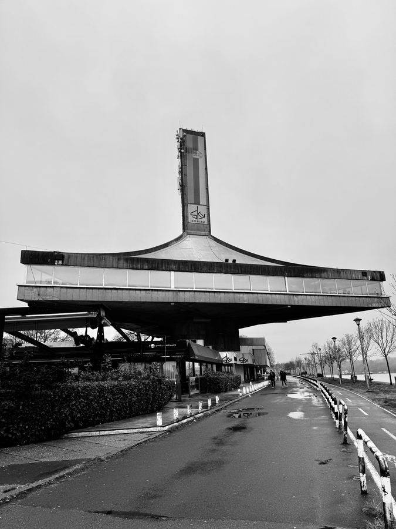
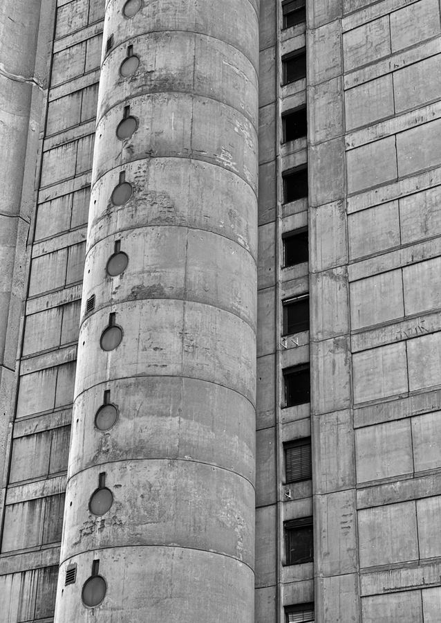
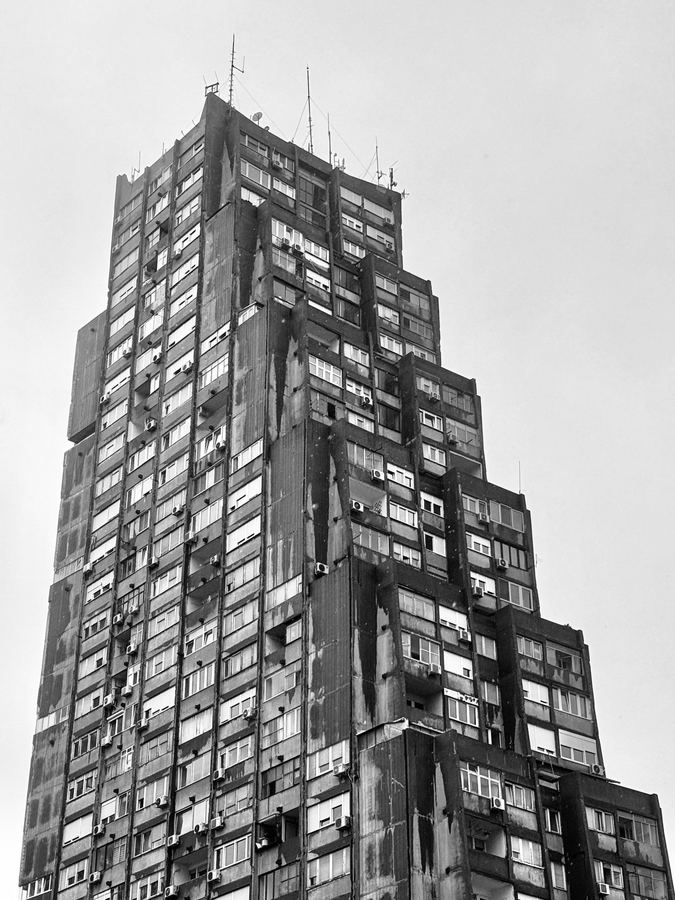
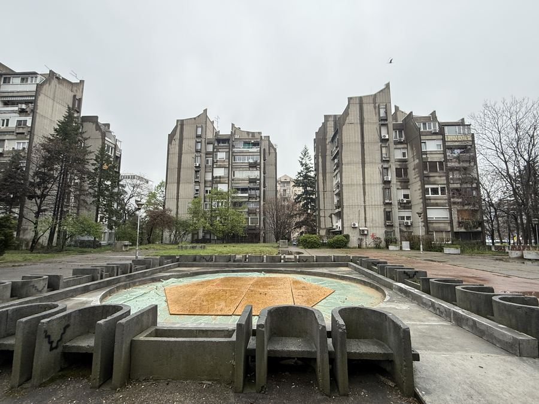
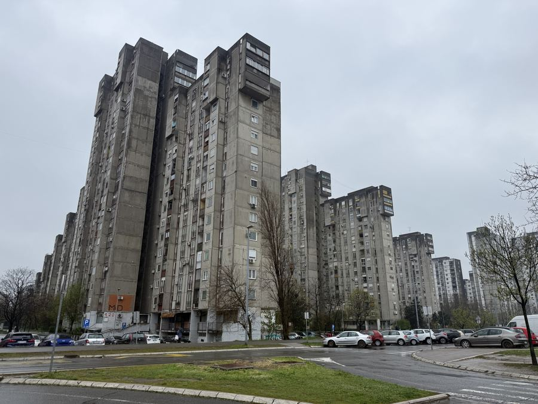
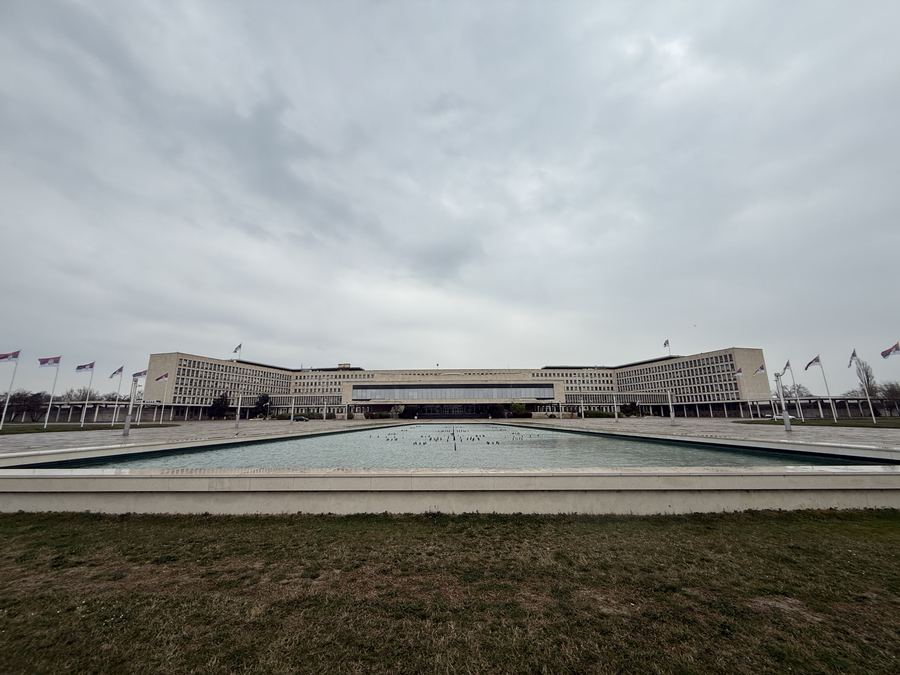
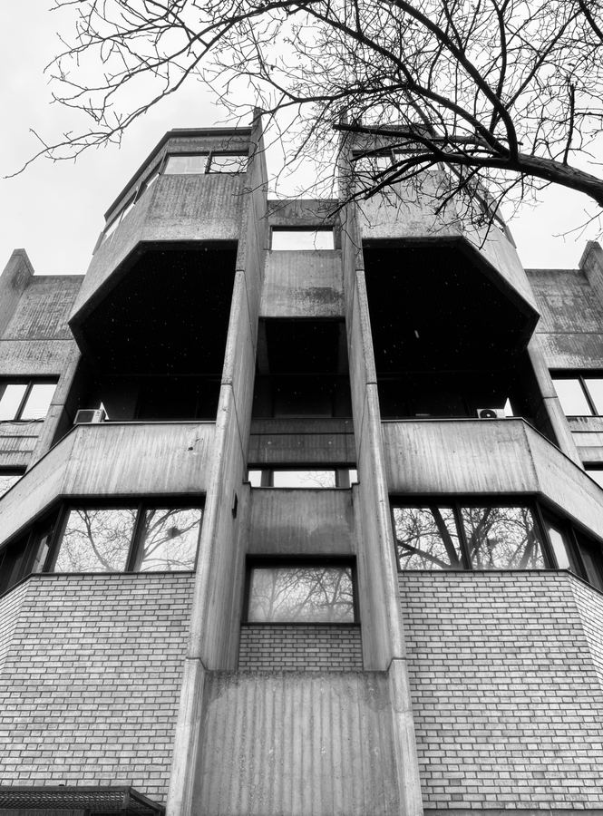
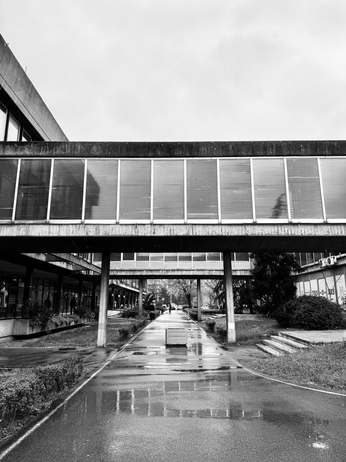
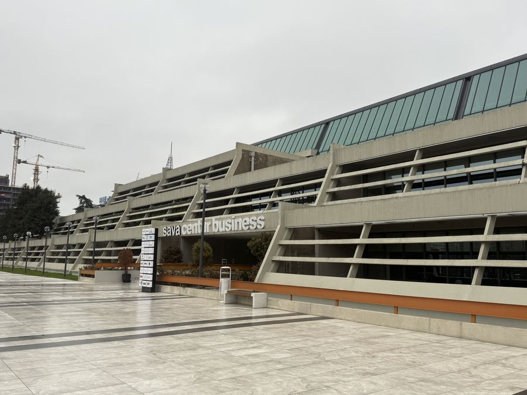
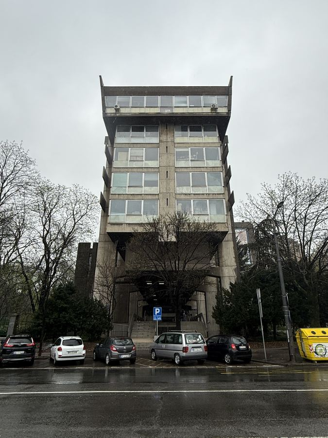

01 / 11
Milan Muškatirović Sports Centre

02 / 11
Genex Tower

03 / 11
Toblerone Building

04 / 11
Eastern City Gates

05 / 11
Block 22 and 23

06 / 11
Block 62 and 63

07 / 11
Palace of Serbia

08 / 11
SIV 3

09 / 11
New Belgrade City Hall

10 / 11
Sava Centre

11 / 11